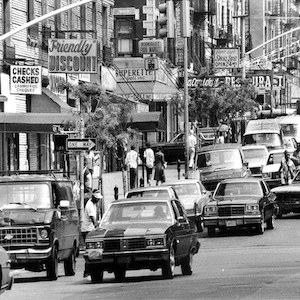
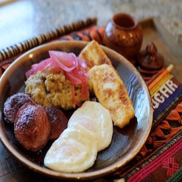
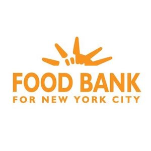

MADUROS' RESTAURANT
2588 Sedgwick Ave Bronx, NY
718-333-3333
PROUDLY SERVING THE BRONX FOR 30 YEARS
Maduros' Restaurant is Bronx hidden gem for serving traditional affordable & authentic Dominican foods.
Where you come out with a craving for our phenomenal food!
Our Story
Maduros' Restaurant opened on April 25th 1988 by a passionate Dominican chef pursuing the American Dream in Washington Heights. In the early nineties, Maduros popularity grew steadily serving Dominican cuisine like the delicious Pastelon or Plantain Casserole.


Food Quality
Our food is freshly made from the highest quality ingredients. This include the best local meat & hand picked organic fruits & vegetables used to prepared the most delicious plates served in Maduros’ restaurant. No hormones or antibiotics are ever in our ingredients.
Community
Maduros’ restaurant is proudly to serve communities in the Bronx. Maduros awards full scholarship for students who excel in their school curriculum & are seeking to further their education.
Maduros’ Help Feed The Poor allows us to donate unused food to Bronx food pantries & community organizations every week.
